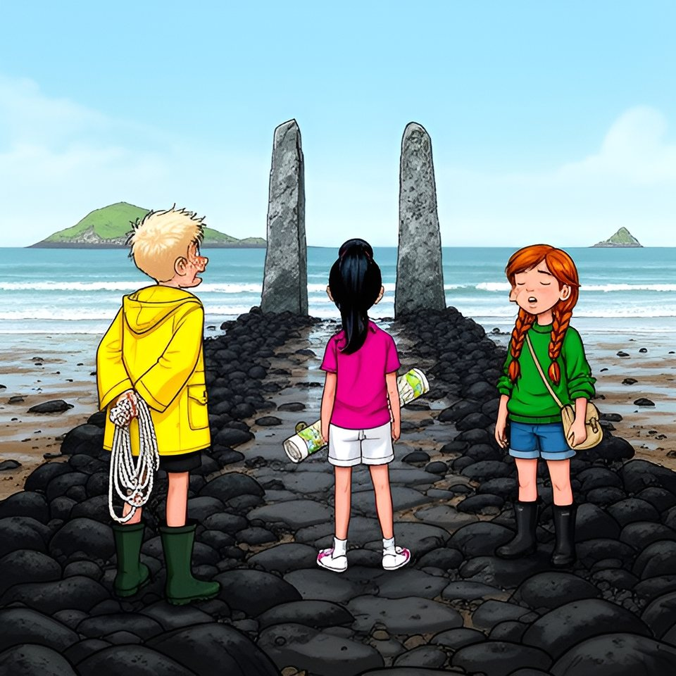

Titistoire › Les Galaxies (8-10 ans)
Retourne-toi
Le Trésor coupé en deux, épisode 7 sur 8 : un feuilleton à énigmes sur l'île de Lodenn.

▶ Écouter et regarder l'histoire
Gratuit, sans inscription : la voix lit, le texte suit mot à mot, les images tournent comme dans un album.
Le texte de l'histoire
Aux Chanteuses, Tino a frappé, Oscar a écouté, et le seul rocher muet a livré la quatrième leçon. Maël et Victoire, fâchés trois jours, ont remis leurs moitiés de carte bord à bord. Mais Gildas l'a annoncé poliment : pendant la Grande Basse, le tour des Jumelles lui est réservé.
Dans le creux du rocher dormait une ardoise. Elle disait : « Quatrième leçon : frappe, et écoute. Ce qui est plein chante ; ce qui garde un secret répond tout bas. Tu sais l'heure, la mesure, l'abri et l'écoute. Il te reste à savoir où regarder. »
Et, pour finir, deux lignes que personne n'a encore comprises, ni Awa, ni Enora : « Va le plus loin que la mer te laisse aller, entre les sœurs de pierre. Ce que j'y ai écrit se lit dans les deux sens. »
Le lendemain matin, l'ardoise de la cale annonçait cent cinq, et la Cabine sentait la serviette mouillée. Assise sur la marche, Awa tenait une liste. « En fait, des mots qui se lisent dans les deux sens, il y en a plein. Été. Kayak. Radar. » Elle releva le nez. « Et ça ne mène nulle part. »
« La vérité vraie, s'enflamma Enora, c'est que ma grand-mère en connaît un de quarante-deux lettres. Elle ne le prononce que le dimanche, à cause des courants d'air. » Awa raya une ligne de sa liste. C'était peut-être Enora.
Allongé sur les planches, Oscar leva son harmonica. « Et Oscar, ça marche ? » Awa secoua son chignon. « Oscar, à l'envers, ça fait Racso. Tu ne restes pas pareil : tu deviens quelqu'un d'autre. » Racso souffla deux notes graves. Il se trouvait très bien dans les deux sens.
Maël, lui, regardait la mer s'en aller. « Demain : coefficient cent treize. Basse mer à treize heures quarante. La Chaussée découvre. » Demain commençait la Grande Basse : trois jours où la mer partait si loin que toute l'île descendait jusqu'aux Jumelles, un panier au bras.
Aucun enfant n'y allait sans les grands ; mais ces jours-là, les grands y allaient tous. Restait le bateau gris, mouillé depuis l'aube devant les deux rochers. « Et les vingt mètres du monsieur ? » s'inquiéta Awa. Maël rajusta la corde sur son épaule. « Visibilité : nulle. »
Le lendemain, un peu après midi, six flotteurs de six couleurs passèrent au rang de la grève, et tout Lodenn suivit la mer. Il y avait des paniers, des épuisettes, des bottes de toutes les pointures, et Gwenola en tête, qui riait plus fort que les goélands. « Derrière la mer, tout le monde ! Jamais devant ! »
Passé la Miette commençait la Chaussée : une longue route de roches plates, luisante de goémon, que la mer ne prêtait que quelques jours par an. Oscar y avançait sur la pointe des tongs, comme sur un tapis de limaces. « Ça bouge. Je suis sûr que ça bouge. »
« Cinquante-deux paniers, annonça Tino, qui marchait devant. Cinquante-trois avec celui de Fañch, mais c'est une lessiveuse. Mets tes pieds dans mes pas, Racso : j'ai compté, y a moins d'algues. » Oscar mit ses pieds dans ses pas. Tout au bout, deux hauts rochers pareils sortaient du sable comme deux tours.
Autour des Jumelles, des bouées orange posées sur le sable dessinaient un grand rond. Au milieu, un casque sur les oreilles, Gildas promenait son sonar. Les anciens le saluèrent par son prénom, comme un enfant du pays, puis tout le monde s'éparpilla vers les mares : les crevettes, elles, ne demandaient pas d'autorisation.
Maël et Victoire marchèrent jusqu'aux bouées. « Je propose un marché, commença Victoire. Clause un : la carte ordonne de venir à deux. Clause deux : nous sommes deux. » Maël croisa les bras. « Affirmatif. » Gildas leva enfin les yeux, les compta, et hocha la tête.
« Deux, concéda-t-il. C'est ce qui est écrit, et je respecte les écrits. Le reste de l'équipe à vingt mètres : c'est mesuré. » Puis il souleva lui-même la corde des bouées, comme on tient une porte.
Tout en bas, au creux des deux rochers, là où le sable ne voyait presque jamais le jour, le granit portait des lettres hautes comme la main. Gildas, arrivé le premier, les avait dégagées du goémon. Il les lut, sans quitter son écran des yeux : « Quatre lettres. E, L, O, M. Et deux mots : Retourne-toi. »
Il n'alla pas plus loin. Le sonar s'était mis à chanter : une seule note, aiguë, qui ne finissait pas. « Du métal, murmura Gildas. Sous le sable. Beaucoup. » Il s'éloigna de dix pas, courbé sur son appareil. Il n'écoutait plus. Il fit seulement signe, sans se retourner, que le reste de l'équipe pouvait venir lire.
Les quatre autres arrivèrent au galop, sauf Oscar, qui arriva en se plaignant. « Relis », souffla Enora. Victoire mit un genou dans le sable et relut, lentement, un doigt sous chaque lettre : « E… L… O… M. Retourne-toi. »
« Elom, répéta Tino. C'est pas un mot. » Il tourna sur lui-même, un tour entier, et se retrouva nez à nez avec le rocher. « Voilà. Je me suis retourné. Y a toujours le caillou. » Enora ne riait pas. Elle remuait les lèvres, comme chaque fois qu'elle appelait Tino « Onit » devant l'ennemi.
« M, O, L, E », épela-t-elle. Elle n'ajouta ni vérité vraie, ni pourcentage. « Môle. » Alors Maël et Victoire, qui tournaient le dos à l'île depuis le début, se retournèrent ensemble, du même mouvement.
Derrière eux, il y avait toute la grève, et cinquante dos courbés sur les mares. Plus loin, la Miette, et sa maison sans lit ni feu, pas plus grosse qu'un dé. Et juste derrière le dé, exactement derrière, une ligne rose s'avançait dans la mer et s'arrêtait là. Le bout du Môle.
« Trois cents », souffla Tino. D'habitude, on le faisait taire. Cette fois, Maël se pencha. « Tino. Répète. » Tino avala sa salive. « Le Môle fait trois cents pas. Je les compte tous les jours. Et le capitaine a gravé : mon chemin en fait trois cents, pas un de plus. »
Victoire récita tout bas la ligne qu'elle savait depuis toujours : « Il dort sous la dernière pierre du chemin qui marche sur la mer. » Elle regarda la Chaussée sous ses tongs. « Objection. Ce chemin-ci ne marche pas sur la mer : c'est la mer qui marche dessus, presque toute l'année. »
Très loin, par-dessus le sable, une cloche sonna. Treize heures quarante. Cinquante dos se redressèrent, et tout Lodenn fit demi-tour, ses paniers pleins de crevettes. Gildas, lui, resta : son bateau se moquait bien des cloches. Il plantait un piquet à l'endroit où le sonar avait chanté.
Il n'y avait qu'un soir par été où les enfants de Lodenn se couchaient tard : la veillée de la Grande Basse. On alluma des lampions sur le quai, Fañch sortit ses crêpières, et toute l'île se mit à danser en chaîne, en se tenant par le petit doigt.
Fañch chantait en retournant ses crêpes : « Marchez dessus, vous le verrez, hisse et ho, la Rieuse ! Une complète pour la trois ! Il vous attend à la marée. » Oscar suivait à l'harmonica. La chaîne s'était formée toute seule, et le hasard, qui portait deux tresses rousses, avait placé Maël à côté de Victoire.
Ils se tenaient par le petit doigt, du bout de l'ongle, en regardant chacun un lampion différent. « Avis de coup de vent sur mon petit doigt, grogna Maël. — Clause six, répondit Victoire : on ne commente pas. » Ils firent trois tours de quai sans commenter.
C'est alors que la dernière navette entra au port, tous feux allumés, et que la voix de Gwenola passa par-dessus la musique : « Le clocher par la Croix, et on est chez nous ! » Awa lâcha deux petits doigts d'un coup. La chaîne se cassa en deux.
« En fait… c'est un alignement. Deux repères l'un derrière l'autre : le clocher, la Croix. Et cet après-midi, pareil : la maison de la Miette devant le bout du Môle. » Elle comptait sur ses doigts. « Une ligne te dit sur quel chemin tu es. Pour savoir où t'arrêter, il t'en faut une deuxième. »
On poussa les assiettes. Les deux moitiés de la carte se rejoignirent sur la table, chacune sous la main de son propriétaire. Les deux traits de crayon étaient là, fins comme des cheveux : l'un du clocher à la Croix, l'autre d'entre les sœurs de pierre à la petite maison. Tous deux s'arrêtaient à la découpe.
Maël tendit sa corde le long du premier. Enora posa sur le second le râteau à crêpes de son père. La corde et le râteau se croisèrent en un seul endroit : le point rouge qui terminait la jetée, le seul trait à l'encre rouge de toute la carte. « Tadam », fit Oscar, tout doucement.
Personne ne cria. Tout autour, Lodenn dansait sans se douter de rien. Tino, qui tombait de sommeil contre Oscar, bâilla jusqu'aux oreilles. « Mais alors, pourquoi il a écrit aux jumelles ? » Personne ne sut répondre. Lui-même dormait déjà.
Maël regarda le Môle, long et rose sous les lampions. « Demain : cent seize. Le pied du Môle ne découvre qu'à cent quinze, une demi-heure avant la basse mer. » Personne, à Lodenn, n'avait jamais vu sa dernière pierre : ces jours-là, tout le monde était à la Chaussée. Existait-elle seulement ?
Au large, du côté des Jumelles, une petite lumière ne dormait pas : le Hérisson montait la garde, au mauvais endroit. Fallait-il le dire à Gildas ? Enora regarda longtemps la lumière. Sur sa cale, Job la regardait aussi. On ne vota pas : il était tard, et le Douanier, la tête sous l'aile, ne tranchait plus rien.
On porta Tino jusqu'à son lit, avec sa question. Ce soir-là, la mer revint border Lodenn, comme tous les soirs. Sur l'ardoise de la cale, Job écrivit le chiffre du lendemain : cent seize.
Épisode suivant : La dernière pierre